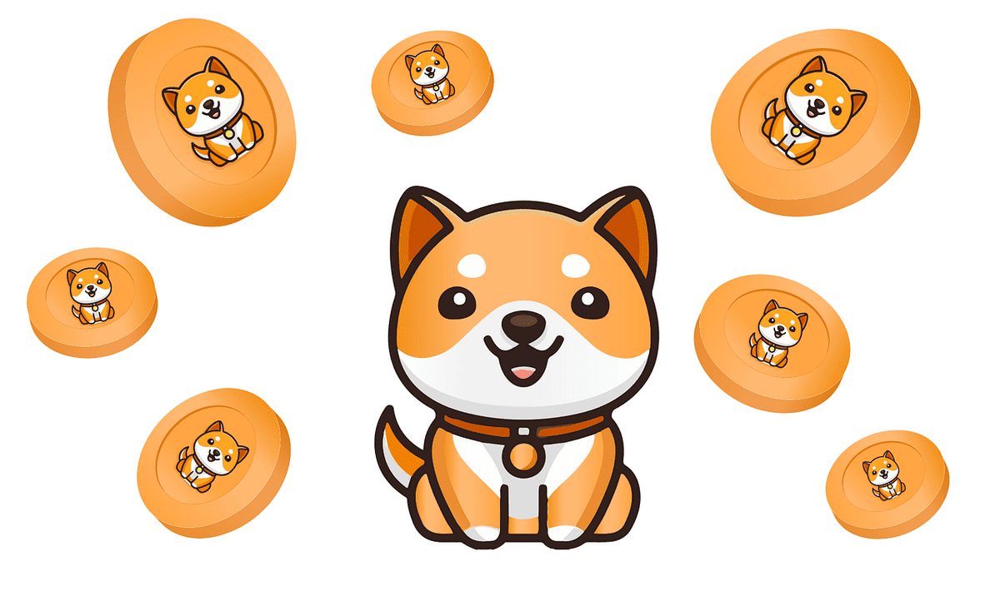

¿Cómo comprar criptomonedas de forma segura con ShibaSwap?
ShibaSwap es un excelente modelo de exchange descentralizada (DEX) y ecosistema de finanzas descentralizadas (DeFi). Esta basada en la red de Ethereum y se ha convertido en un extraordinaria forma de dar utilidad a Shiba Inu y presentarlo como un proyecto real. Asimismo, ha servido para impulsar la adopción de la criptomoneda meme y posicionarla como una de las que mejor rendimiento tiene en el mercado.
SHIBASWAP PARA COMPRAR CRIPTOMONEDAS E IMPULSAR SHIBA INU
ShibaSwap fue lanzada en julio de 2021 y es vista como el punto central de Shiba Inu. También. Ofrece un sin número de servicios útiles para el mercado. Entre las características de ShibaSwap están el intercambio de tokens SHIB y otros tokens de Ethereum, como LEASH, BONE y tokens de liquidez (LP). Asimismo hay pools de liquidez, los cuales pueden aportar liquidez a pools de pares de tokens y ganar recompensas en forma de comisiones y tokens BONE.
Otra de las características de ShibaSwap es que poner en staking tokens SHIB y BONE para obtener recompensas adicionales. Igualmente, ofrece la oportunidad de poner en staking tokens SHIB y BONE para obtener recompensas adicionales. Otro de los puntos más llamativos es el WoofWoof; un sistema de «gamificación» que recompensa a los usuarios por participar en las actividades de ShibaSwap, como staking y proporcionar liquidez. Recientemente se habló de un metaverso, el cual integrará los tokens y servicios de ShibaSwap.
FUNCIONAMIENTO DE SHIBASWAP
ShibaSwap funciona por medio de contratos inteligentes, junto con programas informativos autoejecutables que se dedican a procesar la cadena de bloques de Ethereum. Por medio de estos contratos facilitan las transacciones, el staking y otras funciones de la plataforma. Cabe destacar que ShibaSwap tiene tres tokens.
El primero de ellos es SHIB, el token principal del ecosistema Shiba Inu, utilizado para pagar tarifas, recompensas y participar en diversas funciones. El segundo es BONE, este es un token de gobernanza que otorga a sus tenedores derechos de voto sobre el futuro desarrollo de ShibaSwap. La otra opción es LEASH, token de utilidad con un suministro limitado, diseñado para almacenar valor y potencialmente usarse en el futuro Shibaverse.